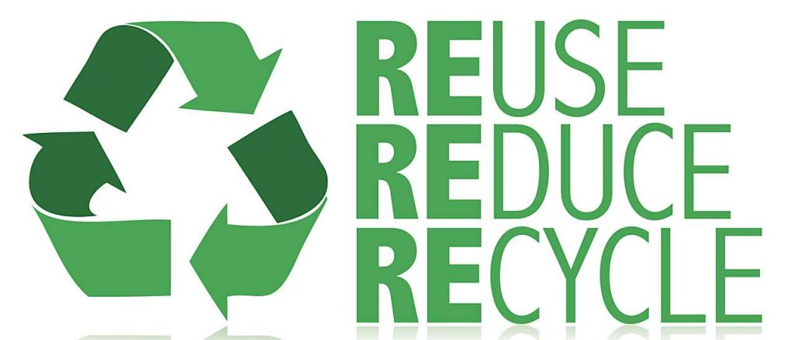

Why not prevent pollution, rather than clean it up later?
 It makes a lot of sense! For years, environmental protection has focused on pollution control - cleaning up the pollution after it occurred--rather than on prevention. The control approach has serious drawbacks, including high costs and increased liability. And when we try to clean up pollution, sometimes we just end up moving the pollutant from one place to another, such as from the air to the land or from the land to water. One example is factories using filters to clean the air before releasing it to the environment. When the filters are periodically cleaned, the pollutants are collected and often sent to a landfill for disposal.
What are CT businesses doing?
Many businesses, both large and small, are operated differently by thinking prevention rather than control. Pollution prevention practices can include changes in design, raw materials, production processes, and delivery of a product. These practices include:
- Raw material substitution: switching to less hazardous materials
- Process modification: changing the production process to improve efficiency and reduce the use of toxic substances
- Equipment upgrade: installing more efficient equipment to reduce raw material consumption and produce less waste.
- Product redesign: reducing certain raw materials in products or packaging, or improving manufacturability.
What can be done at home or school?
You may be practicing practicing pollution prevention at home without even realizing it! For example, if you use a plunger to unclog a sink instead of a toxic drain cleaner, conserve energy by hanging clothes on a line or use mulch in your garden to control weeds instead of chemical weed killer, you are practicing pollution prevention. Schools can employ organic land care techniques and improve indoor air quality by using green cleaners.